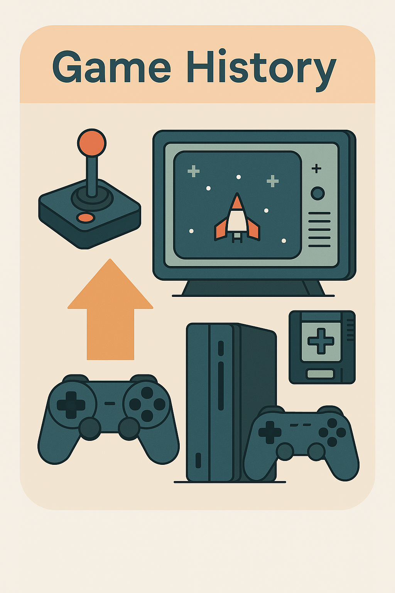

The history of video games spans over five decades, beginning with simple arcade games like Pong and evolving into complex, cinematic experiences such as The Last of Us and Red Dead Redemption. In the 1970s and 80s, companies like Atari and Nintendo helped define early gaming culture. The 1990s saw the rise of 3D graphics and iconic franchises like Pokémon and Final Fantasy. Today, games are a global phenomenon, reflecting cultural trends, advancing technology, and offering new forms of interactive storytelling.
